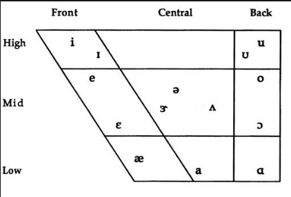
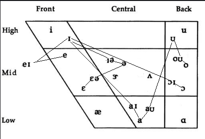

Monophthong & Diphthong sounds are important to learn for advance.
Monophthong (/ˈmɑː.nəf.θɑːŋ/ is A vowel sound in which the tongue stays in one position. Thus to have a proper sound in English, which is crucial to understand the IPA. Certainly, we need to learn it (Monophthong & Diphthong).
Since the majority of people start learning and grasping English communication skills. But, they don’t go through these technical terms.
Hence, later on while striving for advance level communication skills, it proves an obstacle.
In other words, Monophthongs are also called ‘pure vowel sounds’ and they are 12 in number. They include:
1 i: for example, see, Speak, believe
2 ɪ for example, wit, mystic, little
3 e for example, set, meant, bet
4 æ for example, pat, cash, bad
5 ɑ: for example, half, part, father
6 ɒ for example, not, what, cost
7 ɔ: for example, port, caught, all
8 ʊ for example, wood, could put
9 u: for example, for example, you, music, rude
10 ʌ for example, bus, come, but
11 ɜ: for example, beard, word, fur
12 ə for example, alone, butter
Diphthong (/ˈdɪp.θɑːŋ/)
Similarly, a vowel sound in which the tongue changes position to produce the sound of two vowels. As the combination of two vowels comprises the diphthong. Hence, the position of the tongue gets changes to produce these sounds.
1- /eɪ/: It has a Long A sound: for example, day, may, make, take, table etc.
2- /aɪ/: This type of diphthong we pronounce like a long I sound: for example, sky, My, night, flight, etc.
3- /ɔɪ/: This one we pronounce as a long O sound: for examples, Joy, boy, annoy etc.
4- /ɪə/: We pronounce it as a long E sound: for example, pier, hear, clear etc.
5- /eə/: We pronounce this diphthong as a long A sound: for example, beard, hair, fair, etc.
6- /aʊ/: Is pronounced as a short A sound: for example, brown, cow, how, etc.
7- /oʊ/: This diphthong is frequently used and only pronounced as a single long O sound: for example, go, so, no, etc.
Certainly, knowing these sound charts gives a strong sense to understand the correct pronunciations. To clarify, one must learn these technics.